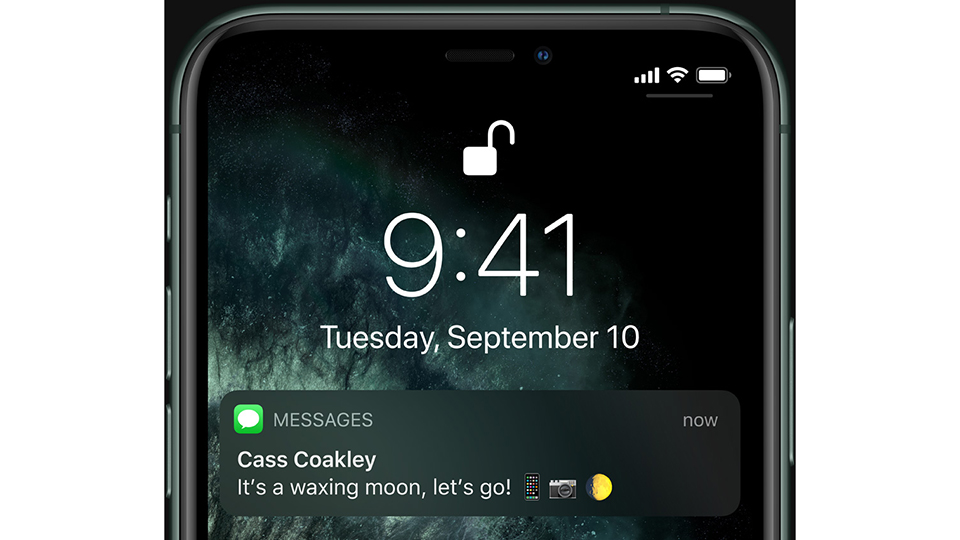
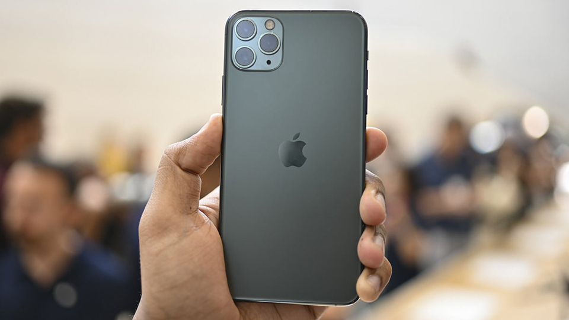
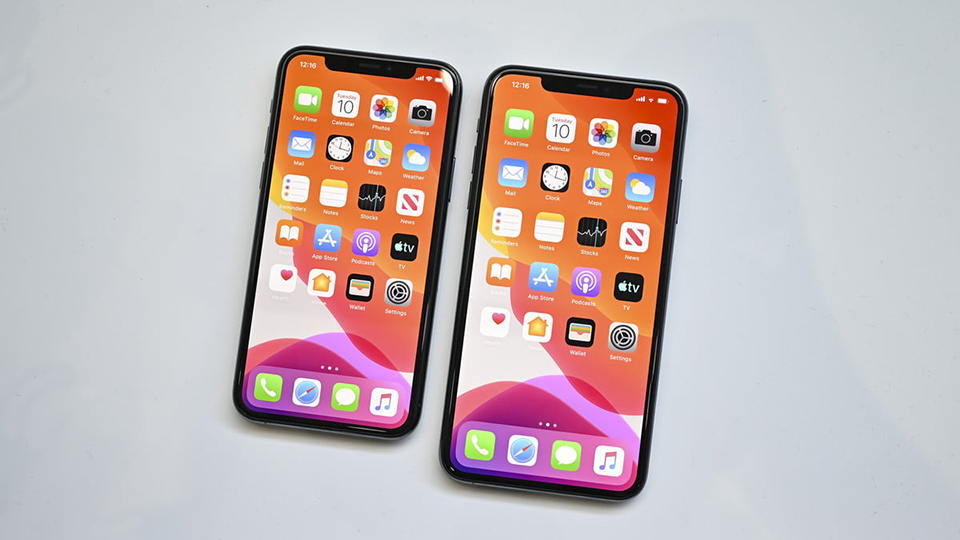
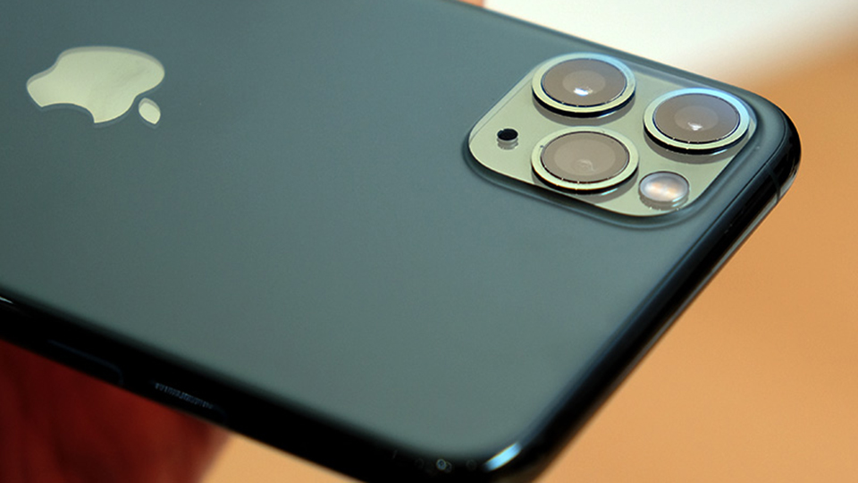
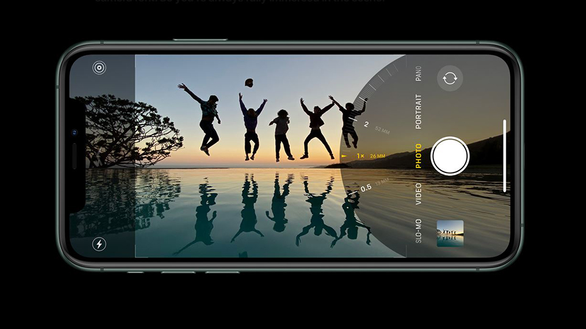
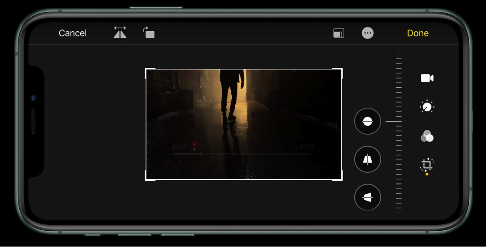
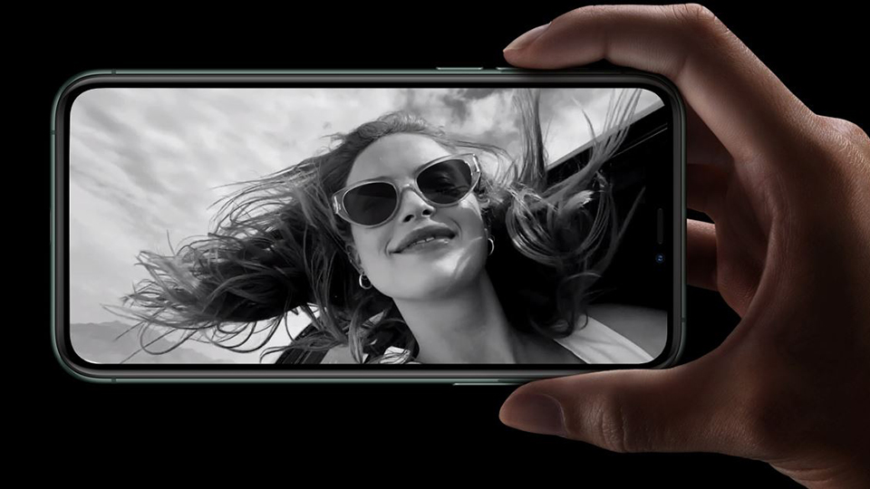
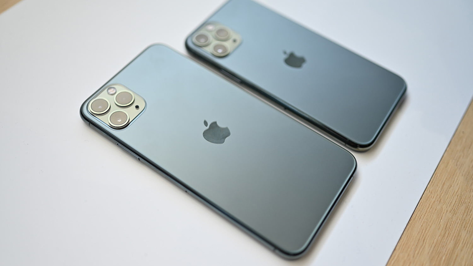

| Màn hình | 6.5", Super Retina XDR, Super AMOLED, 1242 x 2688 Pixel |
| Camera sau | 12.0 MP + 12.0 MP + 12.0 MP |
| Camera Selfie | 12.0 MP |
| RAM | 4 GB |
| Bộ nhớ trong | 64 GB |
| CPU | A13 Bionic |
| GPU | Apple GPU 4 nhân |
| Dung lượng pin | 3969 mAh |
| Thẻ sim | 2, 1 eSIM, 1 Nano SIM |
| Hệ điều hành | iOS 13 |
| Xuất xứ | Trung Quốc |
| Thời gian ra mắt | 9/2019 |
Đặc điểm nổi bật của iPhone 11 Pro Max
Đánh giá chi tiết iPhone 11 Pro Max
Chiếc iPhone mạnh mẽ nhất, lớn nhất, thời lượng pin tốt nhất đã xuất hiện. iPhone 11 Pro Max chắc chắn là chiếc điện thoại mà ai cũng ao ước khi sở hữu những tính năng xuất sắc nhất, đặc biệt là camera và pin.

Sức mạnh hàng đầu của Pro
Được trang bị bộ vi xử lý Apple A13 Bionic, iPhone 11 Pro Max tự tin thể hiện đẳng cấp hiệu năng “Pro”. So với thế hệ trước, Apple A13 Bionic nhanh hơn 20% và tiêu thụ năng lượng ít hơn tới 40% cả về CPU lẫn GPU. iPhone 11 Pro Max mạnh mẽ vượt trội khi đặt cạnh bất cứ đối thủ nào trên thị trường hiện nay. Mọi tác vụ kể cả những tựa game nặng nhất cũng đều được thể hiện trơn tru, mượt mà trên iPhone 11 Pro Max 64GB.
Thời lượng pin tốt nhất trong lịch sử iPhone
Bạn đã từng thấy iPhone Xs Max có thời lượng pin tốt đến mức nào, nhưng đó chưa phải là tất cả. iPhone 11 Pro Max là chiếc iPhone có thời lượng pin tốt nhất từ trước đến nay, thậm chí còn vượt xa khi so với iPhone Xs Max. Thời gian sử dụng của iPhone 11 Pro Max dài hơn 5 giờ, cho phép bạn thoải mái làm tất cả những điều mình thích. Kết quả này có được nhờ sự kết nối ăn khớp giữa phần cứng (bao gồm pin, chip, màn hình) và hệ điều hành mới. Ấn tượng hơn nữa, với sạc nhanh 18W đi kèm, bạn chỉ mất 30 phút sạc cho 50% pin. Luôn đầy đủ năng lượng và sẵn sàng đương đầu với mọi thử thách, đó là iPhone 11 Pro Max.

Tác phẩm nghệ thuật đích thực
Không chỉ đơn thuần là một chiếc điện thoại, iPhone 11 Pro Max là một tác phẩm nghệ thuật đích thực. Sự kết hợp hoàn hảo giữa những vật liệu cao cấp là khung thép không gỉ và hai mặt kính cường lực giúp iPhone 11 Pro Max rất sang trọng, đẳng cấp. iPhone mới đã chuyển sang mặt lưng sơn nhám độc đáo, đẹp mắt hơn đồng thời không bị bám bẩn hay dấu vân tay. iPhone Pro Max có 4 màu thời thượng là Vàng, Xám không gian, Bạc và Xanh Midnight. Dù là một chiếc điện thoại màn hình lớn, nhưng sự hoàn thiện cao cấp giúp iPhone 11 Pro Max vẫn dễ dàng cầm nắm và thao tác.
Kính cường lực siêu cứng, chống nước hoàn hảo
iPhone 11 Pro Max không chỉ đẹp xuất sắc mà còn là một chiếc điện thoại vô cùng bền vững. Được chế tác từ khung thép không gỉ và hai mặt kính cường lực cứng nhất thế giới smartphone, iPhone 11 Pro Max có khả năng chống va đập cực tốt. Chất lỏng cũng không phải là mối nguy hại với iPhone 11 Pro Max khi với chuẩn chống nước IP68, điện thoại có khả năng ngâm nước dưới độ sâu 4m trong thời gian tối đa 30 phút. Thiết kế vững chắc giúp bạn yên tâm hơn khi sử dụng.

Trải nghiệm màn hình lớn 6,5 inch Super Retina XDR tuyệt mỹ
iPhone 11 Pro Max là chiếc iPhone có màn hình lớn nhất với tấm nền 6,5 inch, công nghệ Super Retina XDR mới nhất. Một màn hình OLED hiển thị màu sắc sống động, độ tương phản và độ sáng đáng kinh ngạc sẽ đưa bạn đến những trải nghiệm chưa từng thấy. Khả năng hiển thị ngoài trời hoàn hảo với độ sáng 800 nits và thậm chí là 1200 nits khi xem những nội dung có dải nhạy sáng rộng. Dù là bất cứ nội dung gì thì iPhone 11 Pro Max cũng hiển thị một cách tuyệt vời. Ấn tượng hơn nữa, màn hình này còn tiết kiệm điện hơn 15%, để iPhone 11 Pro Max có thời lượng pin khó tin.

Hệ thống 3 camera sau đẳng cấp, nâng tầm nhiếp ảnh chuyên nghiệp
Với việc trang bị hệ thống 3 camera sau chất lượng, iPhone 11 Pro Max đã có một bước tiến dài về nhiếp ảnh. Chụp cảnh rộng gấp 4 lần; chụp ảnh thiếu sáng hoàn hảo; quay video 4K 60fps chống rung và khả năng chỉnh sửa hậu kỳ bằng những công cụ chuyên nghiệp, dễ sử dụng ngay trên chiếc iPhone của bạn. iPhone 11 Pro Max chính là chiếc điện thoại có camera xuất sắc bậc nhất hiện nay.

Phóng to tầm mắt của bạn
Cả thế giới sẽ được thu gọn trong camera của iPhone 11 Pro Max. Từ camera Tele, camera góc rộng cho đến camera góc siêu rộng, iPhone 11 Pro Max có thể zoom quang 4x hay chụp được những khung cảnh lớn gấp 4 lần. Dù vật thể gần hay xa, từ những sinh vật nhỏ bé cho đến những cảnh vật thiên nhiên hùng vĩ, iPhone 11 Pro Max đều có thể lưu giữ lại theo cách chân thực nhất.

Ảnh chụp thiếu sáng tuyệt đẹp
Thiếu sáng không còn là điều kiện có thể làm khó camera iPhone 11 Pro Max nữa. Với cảm biến camera mới và chế độ chụp đêm chuyên dụng Night Mode, iPhone 11 Pro Max có thể thu được những ánh đèn lung linh huyền ảo trong đêm tối. Bạn không cần phải chỉnh sửa gì, iPhone sẽ tự động kích hoạt chế độ Night Mode khi ánh sáng không đủ và mang đến kết quả tuyệt vời nhất.
Ảnh chân dung xóa phông “ảo diệu”
iPhone 11 Pro Max chắc chắn là chiếc điện thoại có khả năng chụp ảnh chân dung xóa phông hàng đầu hiện nay. Hệ thống 3 camera hoạt động cùng lúc giúp cho những bức ảnh chân dung sẽ được xóa phông chính xác, phân tách chủ thể và hậu cảnh mượt mà, hiệu ứng làm mờ tự nhiên. Trên iPhone 11 Pro Max, bạn có thể xóa phông 2 người cùng lúc trong bức ảnh; xóa phông với đối tượng là vật thể. Đồng thời cường độ ánh sáng, hiệu ứng hậu cảnh cũng được điều chỉnh để có được kết quả mỹ mãn nhất.
Nâng tầm ảnh chụp bằng Smart HDR
Tính năng Smart HDR trên iPhone 11 Pro Max sẽ giúp ảnh chụp “chất” hơn bao giờ hết. Thuật toán tiên tiến, cảm biến cao cấp cùng khả năng tự học hỏi Machine Learning sẽ giúp ánh sáng, độ tương phản, cân bằng trắng và màu sắc trở nên hoàn hảo. Trong một bức ảnh chụp, chủ thể và cảnh nền sẽ được tinh chỉnh riêng biệt giống như những máy ảnh DSLR cao cấp để mang lại bức ảnh thực sự có hồn, chân thực và sống động.
Quay và chỉnh sửa video chuyên nghiệp
iPhone luôn là thiết bị được đánh giá rất cao về quay video. Nhưng với iPhone 11 Pro Max, bạn còn bất ngờ hơn vì những gì mà chiếc điện thoại này mang lại. Bộ vi xử lý mạnh mẽ và cụm 3 camera giúp iPhone 11 Pro Max có thể quay những đoạn video chất lượng 4K 60fps siêu sắc nét. Khả năng chống rung chuyên nghiệp, dải nhạy sáng cực rộng, chuyển đổi góc nhìn giữa các camera giúp video trở nên hấp dẫn hơn bao giờ hết. Bạn còn có tính năng zoom vào đối tượng trong khi quay, cả hình ảnh lẫn âm lượng đều trở nên lớn hơn. Không chỉ vậy, hệ thống phần mềm biên tập và công cụ chỉnh sửa trên iPhone sẽ giúp bạn nhanh chóng hậu kỳ, xuất bản đoạn video ưng ý.

Trở nên xinh đẹp hơn với camera selfie 12MP
Trên iPhone 11 Pro Max, camera trước đã được nâng cấp lên độ phân giải 12MP, mang đến ảnh chụp sắc nét, chi tiết và chất lượng cao hơn. Camera này còn được tích hợp thêm tính năng quay video chuyển động siêu chậm 120 fps, mở ra một khái niệm mới mang tên slofie. Những khoảnh khắc của bạn sẽ được lưu lại độc đáo qua các đoạn video siêu chậm quay bằng chính camera trước. Selfie đã là quá khứ, bây giờ là slofie!

Face ID, phương thức nhận diện khuôn mặt bảo mật nhất trên smartphone
Face ID trên iPhone 11 Pro Max được cải tiến nhận diện nhanh hơn 30%, giúp bạn mở khóa máy một cách tiện lợi và hoàn toàn tự nhiên. Để máy xa hơn, mở khóa dưới mọi góc độ, Face ID mới thật tuyệt vời. Không chỉ nhanh chóng, dữ liệu khuôn mặt của bạn còn vô cùng an toàn khi không được sao lưu ở bất cứ đâu. Ngoài ra, thông tin bản đồ và iMessage cũng được mã hóa để không ai có thể lấy thông tin từ bạn. Nhanh chóng, tiện lợi và rất bảo mật.



{kind=link}
{kind=link}